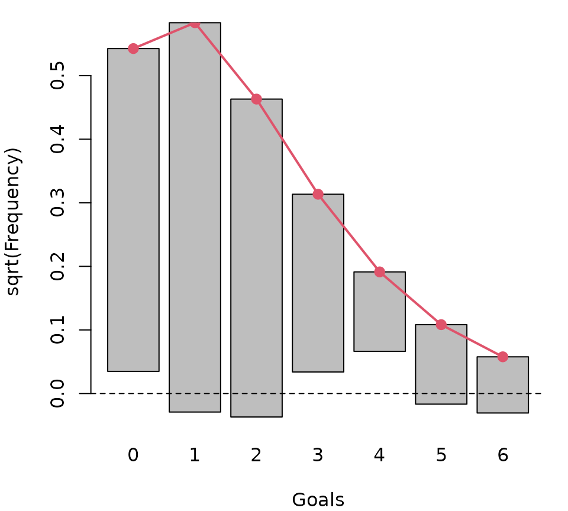

The Poisson distribution: From basic probability theory to regression models
Source:vignettes/poisson.Rmd
poisson.RmdThis vignette provides a brief introduction to the Poisson distribution for modeling count data along with a short case study about the goals scored at the 2018 FIFA World Cup. It is intended as an illustrative introduction that can be used as self-study material or as a class room exercise in a course covering GLMs.
The Poisson distribution
The classic basic probability distribution employed for modeling count data is the Poisson distribution. Its probability mass function \(f(y; \lambda)\) yields the probability for a random variable \(Y\) to take a count \(y \in \{0, 1, 2, \dots\}\) based on the distribution parameter \(\lambda > 0\):
\[ \text{Pr}(Y = y) = f(y; \lambda) = \frac{\exp\left(-\lambda\right) \cdot \lambda^y}{y!}. \]
The Poisson distribution has many distinctive features, e.g., both its expectation and variance are equal and given by the parameter \(\lambda\). Thus, \(\text{E}(Y) = \lambda\) and \(\text{Var}(Y) = \lambda\). Moreover, the Poisson distribution is related to other basic probability distributions. Namely, it can be obtained as the limit of the binomial distribution when the number of attempts is high and the success probability low. Or the Poisson distribution can be approximated by a normal distribution when \(\lambda\) is large. See Wikipedia (2022) for further properties and references.
In the distributions3 package Poisson distribution objects can be generated with the Poisson() function. Subsequently, the object can be handled like other distribution objects in distributions3: print; extract mean and variance; evaluate density, cumulative distribution, or quantile function; or simulate random samples.
library("distributions3")
Y <- Poisson(lambda = 1.5)
print(Y)
## [1] "Poisson distribution (lambda = 1.5)"
mean(Y)
## [1] 1.5
variance(Y)
## [1] 1.5
pdf(Y, 0:5)
## d_0 d_1 d_2 d_3 d_4 d_5
## 0.22313016 0.33469524 0.25102143 0.12551072 0.04706652 0.01411996
cdf(Y, 0:5)
## p_0 p_1 p_2 p_3 p_4 p_5
## 0.2231302 0.5578254 0.8088468 0.9343575 0.9814241 0.9955440
quantile(Y, c(0.1, 0.5, 0.9))
## q_0.1 q_0.5 q_0.9
## 0 1 3
set.seed(0)
random(Y, 5)
## r_1 r_2 r_3 r_4 r_5
## 3 1 1 2 3Using the plot() method the distribution can also be visualized which we use here to show how the probabilities for the counts \(0, 1, \dots, 15\) change when the parameter is \(\lambda = 0.5, 2, 5, 10\).
plot(Poisson(0.5), main = expression(lambda == 0.5), xlim = c(0, 15))
plot(Poisson(2), main = expression(lambda == 2), xlim = c(0, 15))
plot(Poisson(5), main = expression(lambda == 5), xlim = c(0, 15))
plot(Poisson(10), main = expression(lambda == 10), xlim = c(0, 15))In this vignette we will illustrate how this infrastructure can be leveraged to obtain predicted probabilities for the number of goals in soccer matches from the 2018 FIFA World Cup.
Goals in the 2018 FIFA World Cup
To investigate the number of goals scored per match in the 2018 FIFA World Cup, the FIFA2018 data set provides two rows, one for each team, for each of the 64 matches during the tournament. In the following, we treat the goals scored by the two teams in the same match as independent which is a realistic assumption for this particular data set. We just remark briefly that there are also bivariate generalizations of the Poisson distribution that would allow for correlated observations but which are not considered here.
In addition to the goals, the data set provides some basic meta-information for the matches (an ID, team name abbreviations, type of match, group vs. knockout stage) as well as some further covariates that we will revisit later in this document. The data looks like this:
data("FIFA2018", package = "distributions3")
head(FIFA2018)
## goals team match type stage logability difference
## 1 5 RUS 1 A group 0.1530732 0.8638406
## 2 0 KSA 1 A group -0.7107673 -0.8638406
## 3 0 EGY 2 A group -0.2066409 -0.4438080
## 4 1 URU 2 A group 0.2371671 0.4438080
## 5 3 RUS 3 A group 0.1530732 0.3597142
## 6 1 EGY 3 A group -0.2066409 -0.3597142For now, we will focus on the goals variable only. A brief summary yields
summary(FIFA2018$goals)
## Min. 1st Qu. Median Mean 3rd Qu. Max.
## 0.000 0.000 1.000 1.297 2.000 6.000showing that the teams scored between \(0\) and \(6\) goals per match with an average of \(\bar y = 1.297\) from the observations \(y_i\) (\(i = 1, \dots, 128\)). The corresponding table of observed relative frequencies is:
observed <- prop.table(table(FIFA2018$goals))
observed
##
## 0 1 2 3 4 5 6
## 0.2578125 0.3750000 0.2500000 0.0781250 0.0156250 0.0156250 0.0078125(Note that in recent versions of R using proportions() rather than prop.table() is recommended.)
This confirms that goals are relatively rare events in a soccer game with each team scoring zero to two goals per match in almost 90 percent of the matches. Below we show that this observed frequency distribution can be approximated very well by a Poisson distribution which can subsequently be used to obtain predicted probabilities for the goals scored in a match.
Basic fitted distribution
In a first step, we simply assume that goals are scored with a constant mean over all teams and matches and hence just fit a single Poisson distribution for the number of goals. To do so, we obtain a point estimate of the Poisson parameter by using the empirical mean \(\hat \lambda = \bar y = 1.297\) and set up the corresponding distribution object:
p_const <- Poisson(lambda = mean(FIFA2018$goals))
p_const
## [1] "Poisson distribution (lambda = 1.297)"In the technical details below we show that this actually corresponds to the maximum likelihood estimation for this distribution.
As already illustrated above, the expected probabilities of observing counts of \(0, 1, \dots, 6\) goals for this Poisson distribution can be extracted using the pdf() method. A comparison with the observed empirical frequencies yields
expected <- pdf(p_const, 0:6)
cbind(observed, expected)
## observed expected
## 0 0.2578125 0.273384787
## 1 0.3750000 0.354545896
## 2 0.2500000 0.229900854
## 3 0.0781250 0.099384223
## 4 0.0156250 0.032222229
## 5 0.0156250 0.008357641
## 6 0.0078125 0.001806469By and large, all observed and expected frequencies are rather close. However, it is not reasonable that all teams score goals with the same probabilities, which would imply that winning or losing could just be attributed to “luck” or “random variation” alone. Therefore, while a certain level of randomness will certainly remain, we should also consider that there are stronger and weaker teams in the tournament.
Poisson regression and probabilistic forecasting
To account for different expected performances from the teams in the 2018 FIFA World Cup, the FIFA2018 data provides an estimated logability for each team. These have been estimated by Zeileis, Leitner, and Hornik (2018) prior to the start of the tournament (2018-05-20) based on quoted odds from 26 online bookmakers using the bookmaker consensus model of Leitner, Zeileis, and Hornik (2010). The difference in logability between a team and its opponent is a useful predictor for the number of goals scored.
Consequently, we fit a generalized linear model (GLM) to the data that links the expected number of goals per team/match \(\lambda_i\) to the linear predictor \(x_i^\top \beta\) with regressor vector \(x_i^\top = (1, \mathtt{difference}_i)\) and corresponding coefficient vector \(\beta\) using a log-link: \(\log(\lambda_i) = x_i^\top \beta\). The maximum likelihood estimator \(\hat \beta\) with corresponding inference, predictions, residuals, etc. can be obtained using the glm() function from base R with family = poisson:
m <- glm(goals ~ difference, data = FIFA2018, family = poisson)
summary(m)
##
## Call:
## glm(formula = goals ~ difference, family = poisson, data = FIFA2018)
##
## Deviance Residuals:
## Min 1Q Median 3Q Max
## -2.1437 -1.1546 -0.1746 0.5278 2.3273
##
## Coefficients:
## Estimate Std. Error z value Pr(>|z|)
## (Intercept) 0.21272 0.08125 2.618 0.00885 **
## difference 0.41344 0.10579 3.908 9.31e-05 ***
## ---
## Signif. codes: 0 '***' 0.001 '**' 0.01 '*' 0.05 '.' 0.1 ' ' 1
##
## (Dispersion parameter for poisson family taken to be 1)
##
## Null deviance: 144.20 on 127 degrees of freedom
## Residual deviance: 128.69 on 126 degrees of freedom
## AIC: 359.39
##
## Number of Fisher Scoring iterations: 5Both parameters can be interpreted. First, the intercept corresponds to the expected log-goals per team in a match of two equally strong teams, i.e., with zero difference in log-abilities. The corresponding prediction for the number of goals can either be obtained manually from the extracted coef() by applying exp() (as the inverse of the log-link).
Or equivalently the predict() function can be used with type = "response" in order to get the expected \(\hat \lambda_i\) (rather than just the linear predictor \(x_i^\top \hat \beta\) that is predicted by default).
predict(m, newdata = data.frame(difference = 0), type = "response")
## 1
## 1.23704As above, we can also set up a Poisson() distribution object and obtain the associated expected probability distribution for zero to six goals in a mathc of two equally strong teams:
p_zero <- Poisson(lambda = lambda_zero)
pdf(p_zero, 0:6)
## d_0 d_1 d_2 d_3 d_4 d_5
## 0.290242139 0.359041061 0.222074031 0.091571467 0.028319386 0.007006441
## d_6
## 0.001444541Second, the slope of \(0.413\) can be interpreted as an ability elasticity of the number of goals scored. This is because the difference of the log-abilities can also be understood as the log of the ability ratio. Thus, when the ability ratio increases by \(1\) percent, the expected number of goals increases approximately by \(0.413\) percent.
This yields a different predicted Poisson distribution for each team/match in the tournament. We can set up the vector of all \(128\) Poisson() distribution objects by extracting the vector of all fitted point estimates \((\hat \lambda_1, \dots, \hat \lambda_{128})^\top\):
p_reg <- Poisson(lambda = fitted(m))
length(p_reg)
## [1] 128
head(p_reg)
## 1
## "Poisson distribution (lambda = 1.7680)"
## 2
## "Poisson distribution (lambda = 0.8655)"
## 3
## "Poisson distribution (lambda = 1.0297)"
## 4
## "Poisson distribution (lambda = 1.4862)"
## 5
## "Poisson distribution (lambda = 1.4354)"
## 6
## "Poisson distribution (lambda = 1.0661)"Note that specific elements from the vector p_reg of Poisson distributions can be extracted as usual, e.g., with an index like p_reg[i] or using the head() and tail() functions etc.
As an illustration, the following goal distributions could be expected for the FIFA World Cup final (in the last two rows of the data) that France won 4-2 against Croatia:
tail(FIFA2018, 2)
## goals team match type stage logability difference
## 127 4 FRA 64 Final knockout 0.8865638 0.6289619
## 128 2 CRO 64 Final knockout 0.2576019 -0.6289619
p_final <- tail(p_reg, 2)
p_final
## 127
## "Poisson distribution (lambda = 1.6044)"
## 128
## "Poisson distribution (lambda = 0.9538)"
pdf(p_final, 0:6)
## d_0 d_1 d_2 d_3 d_4 d_5
## 127 0.2010078 0.3224993 0.2587107 0.13835949 0.05549639 0.017807808
## 128 0.3852791 0.3674743 0.1752462 0.05571586 0.01328527 0.002534265
## d_6
## 127 0.0047618419
## 128 0.0004028582This shows that France was expected to score more goals than Croatia but both teams scored more goals than expected, albeit not unlikely many.
Further details and extensions
Assuming independence of the number of goals scored, we can obtain the table of possible match results (after normal time) by multiplying the marginal probabilities (again only up to six goals). In R this be done using the outer() function which by default performs a multiplication of its arguments.
res <- outer(pdf(p_final[1], 0:6), pdf(p_final[2], 0:6))
round(100 * res, digits = 2)
## d_0 d_1 d_2 d_3 d_4 d_5 d_6
## d_0 7.74 7.39 3.52 1.12 0.27 0.05 0.01
## d_1 12.43 11.85 5.65 1.80 0.43 0.08 0.01
## d_2 9.97 9.51 4.53 1.44 0.34 0.07 0.01
## d_3 5.33 5.08 2.42 0.77 0.18 0.04 0.01
## d_4 2.14 2.04 0.97 0.31 0.07 0.01 0.00
## d_5 0.69 0.65 0.31 0.10 0.02 0.00 0.00
## d_6 0.18 0.17 0.08 0.03 0.01 0.00 0.00For example, we can see from this table that the expected probability for France winning against Croatia 1-0 is \(12.43\) percent while the probability that France loses 0-1 is only \(7.39\) percent.
The advantage of France can also be brought out more clearly by aggregating the probabilities for winning (lower triangular matrix), a draw (diagonal), or losing (upper triangular matrix). In R these can be computed as:
sum(res[lower.tri(res)]) ## France wins
## [1] 0.5245018
sum(diag(res)) ## draw
## [1] 0.2497855
sum(res[upper.tri(res)]) ## France loses
## [1] 0.2242939Note that these probabilities do not sum up to \(1\) because we only considered up to six goals per team but more goals can actually occur with a small probability.
Next, we update the expected frequencies table by averaging across the expectations per team/match from the regression model.
expected <- pdf(p_reg, 0:6)
head(expected)
## d_0 d_1 d_2 d_3 d_4 d_5 d_6
## 1 0.1706693 0.3017480 0.2667494 0.15720674 0.069486450 0.024570788 0.0072403041
## 2 0.4208316 0.3642392 0.1576286 0.04547703 0.009840349 0.001703409 0.0002457231
## 3 0.3571261 0.3677207 0.1893148 0.06497703 0.016726166 0.003444474 0.0005911098
## 4 0.2262357 0.3362265 0.2498462 0.12377196 0.045986787 0.013668909 0.0033857384
## 5 0.2380213 0.3416546 0.2452047 0.11732187 0.042100811 0.012086260 0.0028914265
## 6 0.3443506 0.3671104 0.1956873 0.06954039 0.018534163 0.003951835 0.0007021718
expected <- colMeans(expected)
cbind(observed, expected)
## observed expected
## 0 0.2578125 0.294374450
## 1 0.3750000 0.340171469
## 2 0.2500000 0.214456075
## 3 0.0781250 0.098236077
## 4 0.0156250 0.036594546
## 5 0.0156250 0.011726654
## 6 0.0078125 0.003332718As before, observed and expected frequencies are reasonably close, emphasizing that the model has a good marginal fit for this data. To bring out the discrepancies graphically we show the frequencies on a square root scale using a so-called hanging rootogram (Kleiber and Zeileis 2016). The gray bars represent the square-root of the observed frequencies “hanging” from the square-root of the expected frequencies in the red line. The offset around the x-axis thus shows the difference between the two frequencies which is reasonably close to zero.
bp <- barplot(sqrt(observed), offset = sqrt(expected) - sqrt(observed),
xlab = "Goals", ylab = "sqrt(Frequency)")
lines(bp, sqrt(expected), type = "o", pch = 19, lwd = 2, col = 2)
abline(h = 0, lty = 2)
Finally, we want to point out that while the log-abilities (and thus their differences) had been obtained based on bookmakers odds prior to the tournament, the calibration of the intercept and slope coefficients was done “in-sample”. This means that we have used the data from the tournament itself for estimating the GLM and the evaluation above can only be made ex post. Alternatively, one could have used previous FIFA World Cups for calibrating the coefficients so that probabilistic forecasts for the outcome of all matches (and thus the entire tournament) could have been obtained ex ante. This is the approach used by Groll et al. (2019) and Groll et al. (2021) who additionally added further explanatory variables and used flexible machine learning regression techniques rather than a simple Poisson GLM.
Technical details: Maximum likelihood estimation of \(\lambda\)
Fitting a single Poisson distribution with constant \(\lambda\) to \(n\) independent observations \(y_1, \dots, y_n\) using maximum likelihood estimation can be done analytically using basic algebra. First, we set up the log-likelihood function \(\ell\) as the sum of the log-densities per observation:
\[ \begin{align*} \ell(\lambda; y_1, \dots, y_n) & = \sum_{i = 1}^n \log f(y_i; \lambda) \\ \end{align*} \]
For solving the first-order condition analytically below we need the score function, i.e., the derivative of the log-likelihood with respect to the parameter \(\lambda\). The derivative of the sum is simply the sum of the derivatives:
\[ \begin{align*} \ell^\prime(\lambda; y_1, \dots, y_n) & = \sum_{i = 1}^n \left\{ \log f(y_i; \lambda) \right\}^\prime \\ & = \sum_{i = 1}^n \left\{ -\lambda + y_i \cdot \log(\lambda) - \log(y_i!) \right\}^\prime \\ & = \sum_{i = 1}^n \left\{ -1 + y_i \cdot \frac{1}{\lambda} \right\} \\ & = -n + \frac{1}{\lambda} \sum_{i = 1}^n y_i \end{align*} \]
The first-order condition for maximizing the log-likelihood sets its derivative to zero. This can be solved as follows:
\[ \begin{align*} \ell^\prime(\lambda; y_1, \dots, y_n) & = 0 \\ -n + \frac{1}{\lambda} \sum_{i = 1}^n y_i & = 0 \\ n \cdot \lambda & = \sum_{i = 1}^n y_i \\ \lambda & = \frac{1}{n} \sum_{i = 1}^n y_i = \bar y \end{align*} \]
Thus, the maximum likelihood estimator is simply the empirical mean \(\hat \lambda = \bar y.\)
Unfortunately, when the parameter \(\lambda\) is not constant but depends on a linear predictor through a log link \(\log(\lambda_i) = x_i^\top \beta\), the corresponding log-likelihood of the regression coefficients \(\beta\) can not be maximized as easily. There is no closed-form solution for the maximum likelihood estimator \(\hat \beta\) which is why the glm() function employs an iterative numerical algorithm (so-called iteratively weighted least squares) for fitting the model.
References
Groll, Andreas, Lars Magnus Hvattum, Christophe Ley, Franziska Popp, Gunther Schauberger, Hans Van Eetvelde, and Achim Zeileis. 2021. “Hybrid Machine Learning Forecasts for the UEFA EURO 2020.” ArXiv 2106.05799. arXiv.org E-Print Archive. https://arxiv.org/abs/2106.05799.
Groll, Andreas, Christophe Ley, Gunther Schauberger, and Hans Van Eetvelde. 2019. “A Hybrid Random Forest to Predict Soccer Matches in International Tournaments.” Journal of Quantitative Analysis in Sports 15 (4): 271–87. https://doi.org/10.1515/jqas-2018-0060.
Kleiber, Christian, and Achim Zeileis. 2016. “Visualizing Count Data Regressions Using Rootograms.” The American Statistician 70 (3): 296–303. https://doi.org/10.1080/00031305.2016.1173590.
Leitner, Christoph, Achim Zeileis, and Kurt Hornik. 2010. “Forecasting Sports Tournaments by Ratings of (Prob)abilities: A Comparison for the EURO 2008.” International Journal of Forecasting 26 (3): 471–81. https://doi.org/10.1016/j.ijforecast.2009.10.001.
Wikipedia. 2022. “Poisson Distribution — Wikipedia, the Free Encyclopedia.” URL https://en.wikipedia.org/wiki/Poisson_distribution, accessed 2022-02-21.
Zeileis, Achim, Christoph Leitner, and Kurt Hornik. 2018. “Probabilistic Forecasts for the 2018 FIFA World Cup Based on the Bookmaker Consensus Model.” Working Paper 2018-09. Working Papers in Economics; Statistics, Research Platform Empirical; Experimental Economics, Universität Innsbruck. https://EconPapers.RePEc.org/RePEc:inn:wpaper:2018-09.